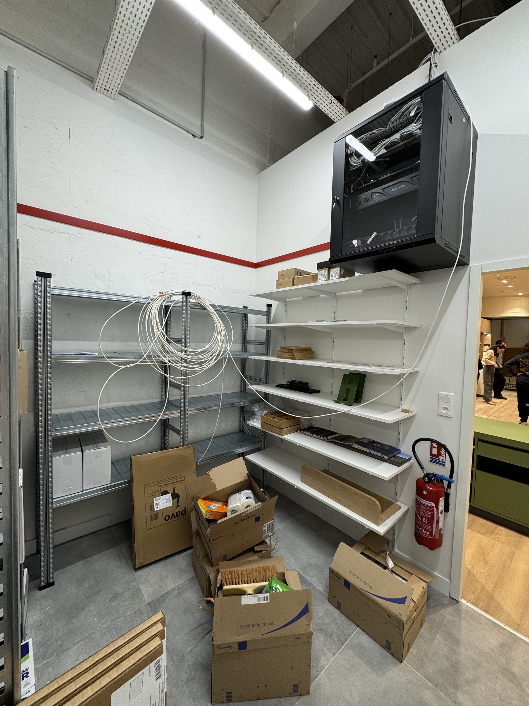
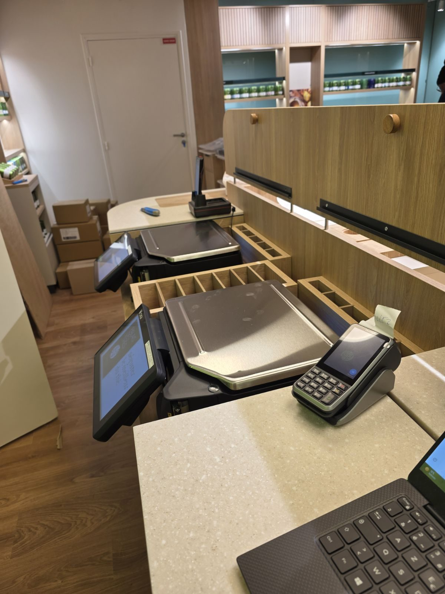
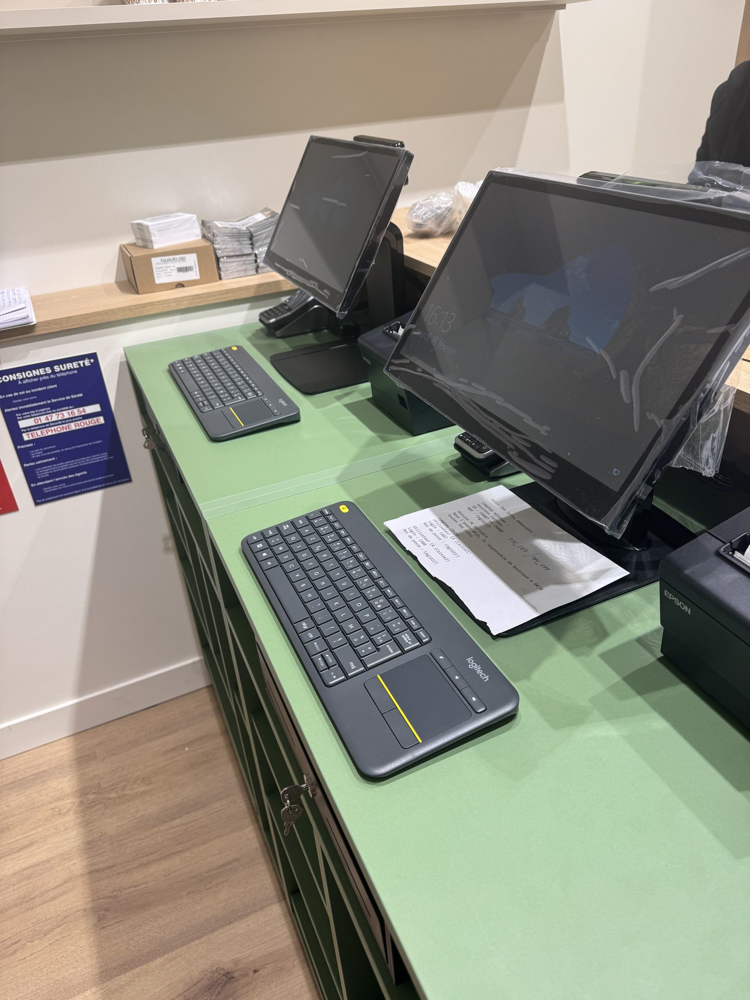
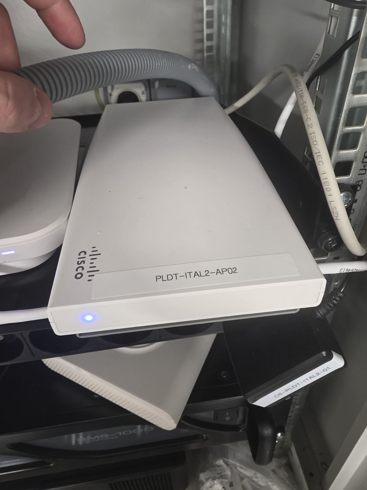
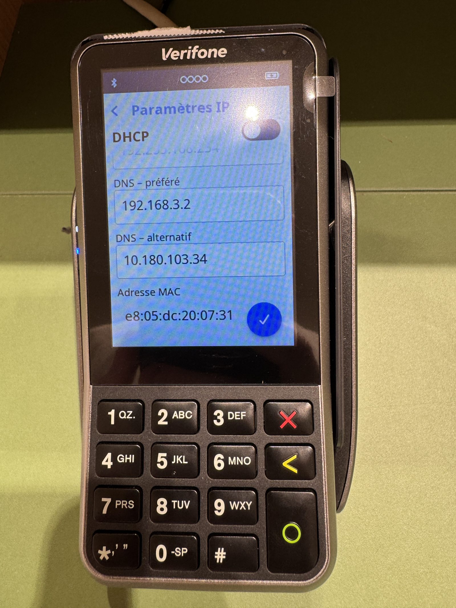
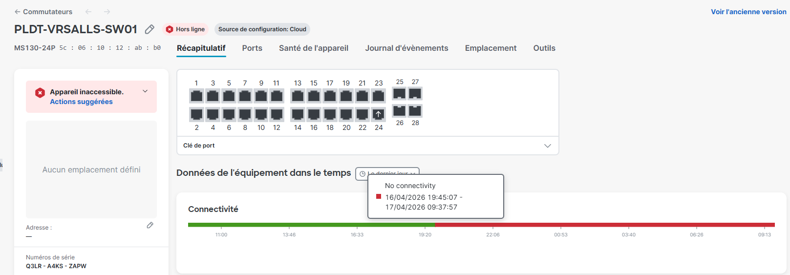

Projet Entreprise · Palais des Thés
Déplacement en boutique pour installation matériel informatique et configuration réseau
Réseau
Cisco Meraki
Déploiement
TPE / Caisse
Ouverture boutique
Contexte du projet
Dans le cadre du développement de l'enseigne Palais des Thés, l'ouverture d'un nouveau point de vente représente une étape stratégique majeure. L'intervention du technicien informatique sur site est le dernier maillon essentiel avant l'accueil des premiers clients — assurer la transition entre un local en chantier et une boutique entièrement connectée, opérationnelle et prête à l'emploi.
Missions réalisées
Cette mission consiste à déployer l'intégralité de l'écosystème numérique de la boutique pour garantir une expérience de vente fluide et une gestion logistique rigoureuse.
Déploiement des caisses
Installation physique et raccordement des caisses tactiles, imprimantes à tickets et afficheurs clients (PTA).
Terminaux de paiement (TPE)
Mise en service et tests des TPE Verifone pour assurer la sécurité et la fluidité des transactions.
Balances connectées
Installation et synchronisation des balances, outils indispensables pour la vente de thé au détail avec remontée directe vers le logiciel de caisse.
Infrastructure réseau
Configuration du switch Cisco Meraki, brassage des câbles RJ45, déploiement des bornes Wi-Fi et sécurisation du réseau boutique.
Réalisation en images
Voici quelques captures prises directement sur le terrain lors de différentes interventions en boutique.
Baie réseau installée en réserve boutique

Caisses tactiles et TPE installés en boutique

Postes de travail déployés au comptoir

Équipements réseau et TPE configurés


Supervision réseau via Cisco Meraki Dashboard

Bilan
Ces interventions sur site constituent l'une des missions les plus complètes et valorisantes de mon alternance. Elles mobilisent simultanément des compétences en infrastructure réseau, en déploiement matériel et en gestion de projet terrain — dans des délais courts imposés par la date d'ouverture.
Résultat : À l'issue de chaque intervention, la boutique est entièrement opérationnelle — réseau fonctionnel, caisses actives, paiements testés et validés — permettant aux conseillers de se concentrer exclusivement sur l'expertise du thé dès l'ouverture des portes.
Compétences acquises
Infrastructure réseau terrain : Configuration de switches Cisco Meraki, brassage RJ45, déploiement de bornes Wi-Fi.
Déploiement matériel : Installation et mise en service de caisses tactiles, imprimantes, afficheurs et balances connectées.
Configuration TPE : Paramétrage réseau et tests de terminaux Verifone pour la sécurisation des paiements.
Supervision réseau : Utilisation du dashboard Cisco Meraki pour le monitoring et le diagnostic des équipements.
Gestion de projet terrain : Autonomie, réactivité et coordination dans un environnement de chantier sous contrainte de délai.